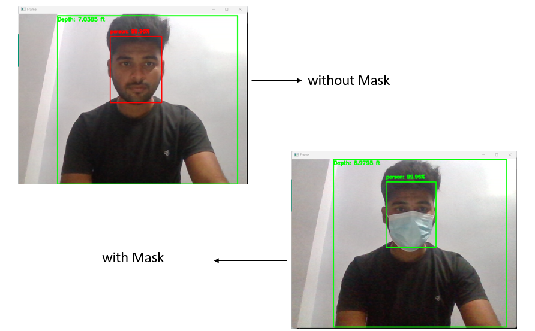
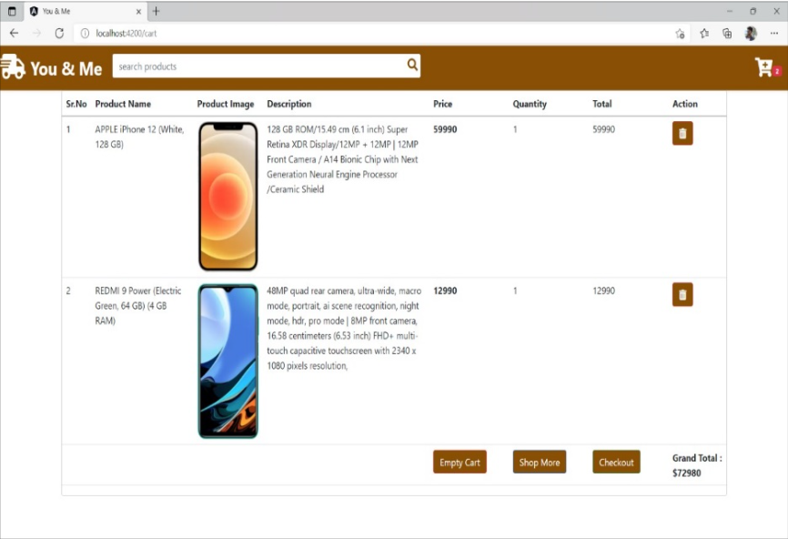
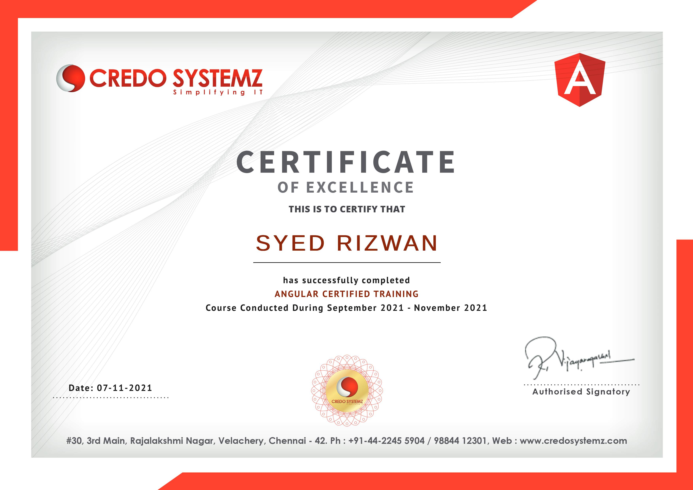

Hello, I'm
Rizwan Syed
Graduate Student At UB


Hello, I'm
Graduate Student At UB
Get To Know More

2.5+ years
Student Researcher at The State University of New York at Buffalo
Dell Campus Ambassador at Dell Technologies
Software Developer at Vaya Group

M.S. in Computer and Information Science
State University of New York at Buffalo
Aug 2023 – Dec 2024
B.Sc. in Computer Science and Engineering
Sathyabama University, Chennai
Jun 2019 – May 2023
I am a passionate Software Engineer with a strong foundation in full-stack development and machine learning. My journey in technology has been marked by significant achievements, including the publication of my research on Face Mask Detection in an international journal and recognition for maintaining academic excellence in the top 15% at Sathyabama University. During my tenure at Vaya Group, I developed sophisticated supplier onboarding systems and implemented efficient file searching algorithms, demonstrating my ability to deliver high-performance solutions.
My technical expertise spans multiple domains, validated through certifications from prestigious institutions, including Angular development from Credo Systems and Java programming from Informatics. As a Student Researcher at the University at Buffalo, I contributed to groundbreaking research in energy efficiency for Large Language Models, achieving substantial reductions in CO2 emissions while maintaining model performance.
Beyond technical skills, I bring strong leadership qualities developed through experiences like serving as a Dell Campus Ambassador and leading innovative projects. My competitive spirit, honed as a district-level badminton player in India, translates into a results-driven approach in my professional work. I thrive in challenging environments and am deeply committed to continuous learning and excellence in everything I undertake.
I am always open to new opportunities and constantly strive to improve and prove myself in this competitive world.
Explore My
Explore my

As a Student Researcher at the University at Buffalo, I spearheaded innovative research focused on enhancing energy efficiency in Large Language Models, particularly GPT-2. My research encompassed advanced techniques including Quantization, Distillation, and Low-Rank Factorization methodologies. Through meticulous implementation of Quantization methods, I achieved remarkable results, reducing CO2 emissions by 19.8% while maintaining robust model performance with only a minimal 6% increase in perplexity scores. A significant breakthrough in my research came from combining distillation and quantization approaches, which yielded an impressive 45.2% reduction in emissions, though this came with a 57.4% increase in perplexity - highlighting the critical balance between environmental impact and model accuracy. Throughout this research tenure, I developed extensive proficiency in Git version control systems, enabling efficient collaboration and code management. This experience not only contributed to the field of sustainable AI but also demonstrated my capability to conduct impactful research in cutting-edge machine learning technologies
As a Dell Campus Ambassador at Dell Technologies , I played a pivotal role in utilizing SQL and PowerBI to analyze and present critical data insights, effectively identifying trends and anomalies that supported strategic decision-making, resulting in a 75% reduction in analysis time. I led a team to promote Dell Technologies on campus, driving student engagement through seminars and workshops focused on cutting-edge advancements. Collaborating with cross-functional teams, I streamlined communication and task management, boosting the efficiency of event execution by 20%. Additionally, I spearheaded the development of interactive dashboards for event feedback, enabling real-time data collection and analysis to enhance future initiatives. My efforts in conducting technical workshops on modern data analysis tools empowered students with industry-relevant skills, while data-driven strategies to target key demographics increased engagement and participation by 30%. Through these initiatives, I significantly enhanced brand visibility and fostered a tech-savvy culture among students, aligning with Dell Technologies' mission of innovation and leadership in technology.

As a Software Engineer at Vaya Group, I developed a sophisticated supplier onboarding system for Vipani.ai using a microservices-based architecture with Java and SpringBoot. This system enabled suppliers to provide comprehensive details for effective B2B procurement, enhancing the onboarding process significantly. I implemented a robust file searching system that achieved optimal performance with a p95 latency under 10 milliseconds over a million files, utilizing a Trie-based algorithm with JavaScript, React, and multi-stage caching. Leveraging object-oriented programming concepts, I maintained a modular and structurally simple codebase, facilitating easier maintenance and scalability. Throughout my tenure, I gained extensive practical experience in working closely with cross-functional teams to optimize system performance and resolve technical challenges. My direct collaboration with the production team provided valuable insights into real-world application deployment and maintenance. I actively participated in Agile development processes, including daily stand-ups, sprint planning, and retrospective sessions . This hands-on experience with production systems and team dynamics significantly enhanced my understanding of enterprise-level software development and deployment practices.
Explore my
Relational Database Engine (Taco-DB)
As part of my academic projects, I developed Taco-DB, a sophisticated high-performance database management system (DBMS) using C++, demonstrating strong expertise in database architecture and system optimization. The project focused on efficient data storage and retrieval mechanisms, implementing POSIX I/O for optimal file handling and enhanced data manipulation. I designed and implemented an efficient data layout system that streamlined data access and optimized storage space, significantly improving query execution performance. Through the integration of B-tree indexing and engineering of single-table query processing algorithms, I achieved substantial improvements in data retrieval speed and search efficiency across large datasets. The system successfully passed over 250+ test cases, validating its robustness and reliability. I also developed and implemented sophisticated join algorithms for efficient relational data operations, coupled with manual query optimization techniques that refined execution plans. This comprehensive approach resulted in reduced query times, optimized resource consumption, and enhanced overall database scalability, making Taco-DB a testament to my abilities in complex system design and performance optimization.
FACE MASK DETECTION WITH ALARM USING MACHINE LEARNING
As my final year undergraduate project, I developed an innovative Social Distancing & Face Mask Detection System with Real-Time Alert Integration, which was selected as one of the most innovative projects across the university. The system leveraged deep learning technologies to perform real-time monitoring of face mask compliance and social distancing in public spaces. Using Convolutional Neural Networks implemented with TensorFlow and Keras, I engineered a sophisticated classification system that accurately identified masked and unmasked individuals. The solution integrated seamlessly with existing surveillance systems through OpenCV for efficient image and video processing, enabling large-scale monitoring capabilities.
A key achievement was the implementation of an automated alert mechanism that provided immediate notifications upon detecting non-compliance, significantly enhancing public safety during COVID-19. The system's architecture was optimized using a lightweight MobileNet framework deployed on edge devices, ensuring high-performance detection while maintaining computational efficiency. The project's technical merit and practical significance were validated through publication in the International Research Journal under the title "Face Mask Detection with Alarm using Machine Learning."

ONLINE ELECTRONIC STORE USING ANGULARJS
I developed "You and Me," an innovative online electronic store inspired by platforms like Flipkart and Amazon, showcasing my expertise in full-stack web development using Angular. The e-commerce platform features a dynamic product catalog with advanced search filtering capabilities and comprehensive user account management. By implementing NgRx for state management and optimizing performance through lazy loading techniques, I created a seamless and responsive user experience with efficient API integrations.
The platform's security was a top priority, incorporating robust measures including JWT-based authentication and encryption protocols to ensure secure transactions and protect user data. My proficiency in Angular, validated through certification from Credo Systems, enabled me to build a sophisticated e-commerce solution utilizing HTML, CSS, and JavaScript. The project demonstrates my ability to develop scalable, secure, and user-friendly web applications while implementing industry best practices in modern web development.
Here this is my certification from Credo Systems
IOS- Real Time Camera Object Detection with Machine Learning
I developed a sophisticated iOS application that performs real-time object detection and classification using Swift, demonstrating my expertise in mobile development and machine learning integration. The application leverages a RESNET50 model architecture built with TensorFlow-Lite, achieving an impressive 89% accuracy in classifying objects from the ImageNet dataset across 10 predefined classes. By implementing CoreML framework for on-device inference, I ensured the application maintains efficient performance without requiring internet connectivity, making it highly practical for real-world use. The user experience was a key focus, as I designed an intuitive interface using Figma for prototyping and implemented it with Swift UIKit, creating a seamless and engaging user interaction. This project showcases my ability to combine advanced technologies like machine learning with practical mobile development, while maintaining a strong focus on user experience and performance optimization.
Graduate Salary Prediction using Machine Learning
As part of the Data Intensive Computation course, I engineered a machine learning pipeline to predict graduate salaries, incorporating variables such as educational background, work experience, and geographical location. The project involved extensive data preprocessing, including data imputation, normalization, and handling missing values to ensure high-quality inputs. Feature engineering techniques, such as one-hot encoding and polynomial transformations, were applied to better capture non-linear relationships among features. I employed advanced regression models, including linear regression, decision trees, and random forests, to optimize predictive accuracy and minimize overfitting. Additionally, I performed rigorous exploratory data analysis (EDA) and visualized key salary trends using Seaborn and Matplotlib. The analysis allowed me to identify the most influential predictors and uncover patterns in the data, guiding feature selection. To enhance model robustness, I utilized cross-validation techniques, hyperparameter tuning via grid search, and performance metrics like RMSE and R². The final model was validated on unseen data to ensure generalizability, enabling accurate predictions for real-world applications. The project strengthened my expertise in Python, machine learning libraries such as Scikit-learn, and SQL for data extraction, along with performance tuning techniques for optimizing computational efficiency.
Identifying Fake Products in the Supply Chain System
With reference to Dr. Bina Ramamurthy's research, I spearheaded the development of a blockchain-based decentralized e-commerce application focused on combating counterfeit products in supply chains. The system leverages Solidity smart contracts deployed on Ethereum to create an immutable record of product authenticity, while React provides an intuitive frontend interface for stakeholders to track and verify products throughout the supply chain journey7. The integration of MetaMask enables secure user authentication and transaction signing, while the NoSQL database efficiently handles both on-chain and off-chain data storage, ensuring optimal performance for large-scale supply chain operations12. The application's architecture incorporates a sophisticated Bonafide token system that facilitates secure and transparent transactions while maintaining a comprehensive audit trail of product movements. By utilizing distributed ledger technology, the system creates an unalterable record of each product's journey from manufacturer to consumer, with real-time verification capabilities10. The implementation of smart contracts automates compliance checks and transaction validation, while the NoSQL database's flexible schema accommodates the dynamic nature of supply chain data, enabling efficient querying and storage of product authentication records8. This technical approach significantly enhances supply chain transparency and effectively mitigates the risk of counterfeit products entering the distribution network.
Get in Touch